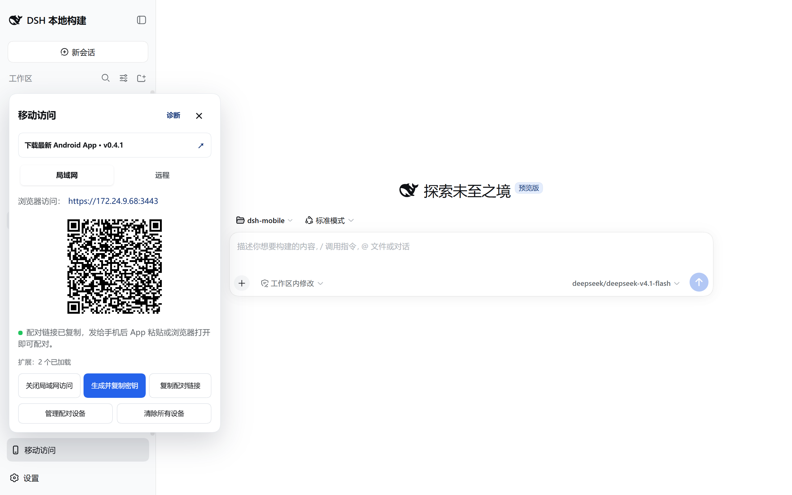

DeepseekHarness 值不值得掏钱？把这笔账算得明明白白
核心框架免费开源，但模型 API、远程通道、时间成本都要钱。我把三档使用强度分别算了一遍，看完三秒就能对号入座。
它到底值不值得掏钱？
先给个前提：DeepseekHarness 的官网上写明了它是 MIT 协议全开源的，你去拉源码、跑 npx 启动 Web UI、换任意模型——这些动作一分钱不花。那账从哪来？钱花在 dsh 之外的那些环节：你选哪个模型、要不要远程访问、愿不愿意花时间把插件生态搭起来。
这篇我把每个成本拆开算，你对照自己的使用强度，看看该在哪些地方掏钱、哪些地方根本不用花。
定价拆解：免费版给什么，"付费"版多什么
dsh 没有官方定价表，也没有订阅制。所谓"免费版"和"付费版"的界限，其实是你往这套开源框架里塞了多少有成本的组件。
纯免费能拿到的东西：
- 核心运行时（Cordis 插件内核）、四种运行模式（标准、极简、PTC、创造）、Web UI 和 CLI 全功能
- 本地模型调用——如果你有本地部署的 Ollama、LM Studio，直接配进去就行，零额外费用
- 局域网移动访问插件（dsh-mobile）的基础配对和会话同步功能
"付费"环节（按需选装，没有强制）：
| 环节 | 成本 | 说明 |
|---|---|---|
| 远程模型 API | 按量付费 | DeepSeek、Claude、OpenAI 等各家接口，每百万 token 从几块到几十块不等 |
| 远程通道 | 云服务器 / cloudflared 高级版 | 局域网访问免费，但跨网远程要么买 VPS 自建反向代理，要么用 cloudflared 免费版（有带宽限制） |
| 插件生态 | 时间成本 | 插件市场里很多现成的，但找、装、调还是要花时间 |
| 移动端高级功能 | 目前免费 | dsh-mobile 0.4.0+ 的多设备列表、任务通知还没收费，但后续可能跟进 |
说穿了，dsh 的定价逻辑跟闭源编码智能体完全反着来——Claude Code 是订阅费包模型包体验，dsh 是框架白送、你自己拼积木、哪块要钱你自己决定在哪块掏钱。这个设计挺鸡贼的：看起来"免费"，但重度用户迟早要在模型 API 上花真金白银。
算账：三档用户各花多少钱
我按实际使用场景把人分成三档，每档算一遍月成本和决策依据。
轻度用：每月不超过 20 小时
画像：偶尔跑 dsh 做些零散任务——改个配置文件、写个小脚本、帮着读一下陌生项目。大部分时间还是手动写代码或用 IDE 自带的 AI 补全。
成本账：
模型 API 按每月 20 小时 × 平均每小时 5 万 token 估算，约 100 万 token。选 DeepSeek Chat 这种便宜档位，每百万 token 约 5 块钱——月成本 5~15 元。
远程通道？不需要。大部分任务在本地跑，偶尔在外网用手机连一下，cloudflared 免费版的带宽够撑。
结论：几乎零成本。唯一要做的就是花 30 分钟从DeepseekHarness下载拿一份、装起来、配好模型 API key。这个门槛太低了，轻度用户闭眼装，不用纠结。
主力用：日常编码的主力助手
画像：每天打开 dsh，让它读仓库、改文件、跑命令、写测试。一周用 20~40 小时，等于把它当成了日常开发流程的一部分。
成本账：
模型 token 消耗会陡增——每天 10~20 万 token 是常态，月累计 500~1000 万。这时候选便宜模型还是高质量模型就成了决策点：
- 全用 DeepSeek：月 25~50 元
- 混合 DeepSeek + Claude（复杂任务用 Claude）：月 80~150 元
- 全用 Claude：月 200~400 元
远程通道开始有需求了——上下班路上想在手机上接着跑 dsh 的任务、或者让家里的 dsh 在云端跑。自建 VPS（轻量云 2 核 2G）约 50 元/月，cloudflared 免费版此时可能已经不够用了。
总月成本：100~450 元
这里有个关键对比：Claude Code 订阅是每月 20 美元（约 145 元），包 Claude 全模型使用。如果你主力用只选 DeepSeek，那 dsh 的成本是订阅的零头；但如果你主力用就是为了用 Claude 的更强推理能力，dsh 直接按量付 API 费反而比订阅贵——因为 Claude Code 订阅有专属配额和更高的速率上限。
结论：主力用户先做一个选择题——你选 dsh 是为了省钱还是为了控制权？
- 为省钱：锁死 DeepSeek 或其他便宜模型，月百元以内拿下，比任何闭源订阅都划算
- 为控制权：换模型、加插件、自己搭远程，那就准备好比闭源订阅花更多 API 费
- 只为开箱即用：直接订阅 Claude Code 或 Codex CLI，省心
重度用：团队级 / 多设备 / 全流程嵌入
画像：不仅自己天天用，还在团队里推广；或者用 dsh 搭了一套自动化流水线、让它持续监控仓库、自动生成 PR。这时候你要的已经不是一个"助手"，而是一套"基础设施"。
成本账：
token 消耗可能到每月 2000 万以上——全 Claude 的话月 API 费轻松过千。远程通道不能再用 cloudflared 免费版了，得自建稳定的反向代理或买商业版，VPS 配置也要升级。还有可能需要在云端持续跑 dsh 实例（不让它断），云服务器成本又是一块。

总月成本：2000~5000 元
但这个量级下，dsh 的可替换性就值回票价了——闭源工具你没法改它的执行循环、没法替换沙箱、没法接自建模型服务。而 dsh 一切皆插件，这个设计在DeepseekHarness文档里讲得更透彻；你可以把模型调用换成公司内部部署的私有化大模型、把执行环境换成自有沙箱、把 UI 换掉——这些事在闭源产品上根本不可能做。
结论：重度用户的决策不在"花多少钱"，而在"你需不需要掌控运行时"。需要的话，花这个钱；不需要的话，用闭源订阅反而更省心且便宜。
替代方案：不付钱有什么别的路
如果你觉得上面算出来的数字还是偏高，有几条替代路线：
路线一：换开源同类，但不开源到插件化
OpenCode 也是开源的，也支持多模型，但它的核心不可替换——换模型可以、换沙箱不行、换 UI 不行。如果 dsh 的插件化对你来说"过度设计"，OpenCode 可能是更轻的选择。成本结构跟 dsh 类似（框架免费、模型按量），但少了折腾插件的时间成本。
路线二：降低使用频率，用闭源订阅
Claude Code 订阅 20 美元/月，如果你的使用量其实不到主力用的一半（比如每周 10 小时），那订阅费可能反而比 dsh 的 API 按量付费便宜——因为订阅给了更高的速率和更稳定的配额。这时候直接订阅闭源产品，省了折腾 dsh 的时间，也省了模型 API 的精打细算。
路线三：纯本地模型，零 token 费
如果你的任务不涉及复杂推理，本地跑 Ollama 或 LM Studio（装个 Qwen2、DeepSeek-R1 之类的量化模型），dsh 配进去就是纯本地、零 API 费。代价是模型能力弱很多，复杂任务可能跑不动。这条路适合"用 dsh 框架但不依赖云端模型"的用户。
最终结论：三秒对号入座
| 你是哪种人 | 该怎么做 |
|---|---|
| 轻度用（月 < 20 小时） | 装！配个便宜模型 API 就完事，月成本个位数 |
| 主力用 + 想省钱 | 装！锁死便宜模型，比闭源订阅划算 |
| 主力用 + 想要控制权 | 装！准备好比订阅花更多 API 费 |
| 主力用 + 只求省心 | 直接订 Claude Code / Codex CLI，别折腾 |
| 重度用 + 需要掌控运行时 | 装！框架费为零，花的钱买的是"能改它"的权利 |
| 重度用 + 不需要控制权 | 订闭源，省心省钱 |
| 不想花一分钱 | 装 + 配本地 Ollama，能力有限但能用 |
最后说句实话：dsh 这套定价最聪明的地方就是它让每个人都能找到自己的成本点。轻度用户真的可以零成本试水，重度用户也不会被订阅费卡死——你愿意为哪个环节掏钱，就掏哪个环节。这个弹性是闭源产品给不了的。它的开源代码在三个平台都有镜像，GitHub是主仓库，Gitee和GitCode方便国内用户更快访问。